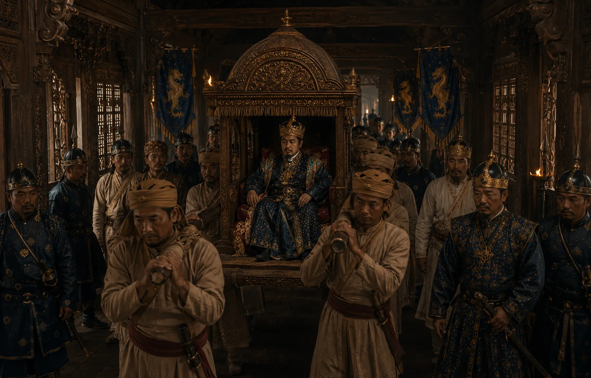

The Frail Reign of Sutingphaa
1644–1648 · Against the Mughal Empire

Afflicted by chronic disease and goitre, Sutingphaa struggles to rule while court factions vie for supremacy.
Sources have not yet been catalogued for this record.
People: Sutingphaa (Noriya Roja)
Open this scene in the interactive archive · Follow this event on MAP